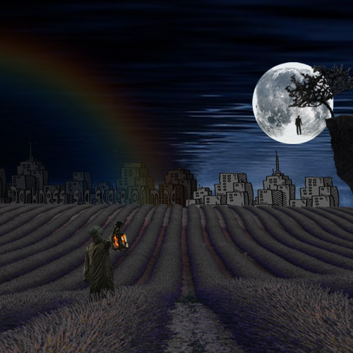

Home | Photoshop | Illustrator | Time Base Media | InDesign | Contact

For my Photoshop final project I got inspired by my favorite photographer. He suffers from a condition called sleep paralysis and bases his work on dis dreamscape experiences. I tried to make something similar, creepy, creative and unusual. Took me a couple of hours to put together a decent final project.